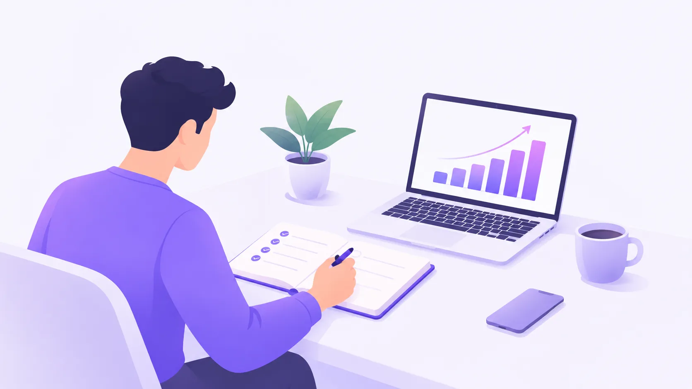

How to Build Better Habits for a Successful Life
Introduction
Success does not happen overnight. It comes from small, consistent actions that improve your skills, mindset, and daily routine. Whether you want to grow your career, start a business, or improve your personal life, building better habits can help you reach your goals.
1. Set Clear Goals
Before you start working toward success, understand what you want to achieve. Clear goals help you focus your time and energy on the things that matter most.
For example: Instead of saying, "I want to learn programming," set a specific goal like learning the basics of JavaScript within 30 days.
Small steps taken consistently can lead to significant results over time.
Tips for Setting Goals
- Choose one important goal at a time.
- Break large goals into smaller tasks.
- Set realistic deadlines.
- Track your progress regularly.
2. Manage Your Time Effectively
Time management helps you complete important tasks without feeling overwhelmed. Start your day by identifying your top three priorities and complete them before moving on to less important activities.
Tracking Methods Compared
Whatever schedule you choose, you need a way to track it. Here is how the most common methods compare.
| Method | Best for | Cost | Setup time | Reminders | Flexibility | Rating |
|---|---|---|---|---|---|---|
| Paper journal | Daily reflection and writing goals by hand | Free to $10 | 5 min | None, you have to remember | High, free-form pages | 4.0 / 5 |
| Habit-tracker app | Streaks, statistics, and gentle nudges | Free to $40 per year | 10 min | Push notifications | Medium, depends on the app | 4.5 / 5 |
| Spreadsheet | Custom data, formulas, and progress charts | Free | 30 min | None, unless linked to a calendar | Very high, you build it | 3.5 / 5 |
| Wall calendar | One visible habit you want to never break | About $5 | 2 min | Visual cue on the wall | Low, one habit per calendar | 3.5 / 5 |
| Sticky notes | Short-term tasks and quick reminders | About $2 | 1 min | Visual cue where you place them | Medium | 3.0 / 5 |
| Digital calendar | Time-blocked routines and recurring habits | Free | 15 min | Email and push alerts | High, supports repeating events | 4.0 / 5 |
| Our pick | Start with a habit-tracker app. Prefer to stay offline? Use a paper journal. | |||||
3. Keep Learning New Skills
The world changes quickly, and continuous learning helps you stay competitive. You can develop new skills through online courses, books, tutorials, and practical projects.
Start with Practical Learning
If you want to become a web developer, begin with HTML, CSS, and JavaScript. For example, the following HTML code creates a simple heading:
<h1>Welcome to My Website</h1>You can write and test code using a text editor. Common keyboard shortcuts such as Ctrl + S help you save your work quickly.
For additional learning resources, visit MDN Web Docs, which provides documentation and tutorials for web technologies.
4. Stay Consistent and Avoid Distractions
Motivation can change from day to day, but consistency helps you keep moving forward. Create a routine that is easy to follow, and reduce distractions while working.
Simple Ways to Stay Focused
- Turn off unnecessary notifications.
- Work in short, focused sessions.
- Take regular breaks.
- Review your achievements at the end of each day.
Remember
You do not need to be perfect. Focus on making progress, learning from mistakes, and improving a little every day.
5. Track Your Progress Visually
Seeing your progress makes it easier to stay motivated. Charts, photos, and short videos can all help you notice how far you have come.
Image

Inline SVG
Video
Conclusion
Building better habits is one of the most effective ways to improve your life. Set clear goals, manage your time, keep learning, and stay consistent. Your results may take time, but every meaningful action brings you closer to the person you want to become.
Frequently Asked Questions
How long does it take to build a habit?
It depends on the habit and the individual. Some habits become easier within a few weeks, while others require several months of consistent practice.
What should I do if I lose motivation?
Start with a small task, revisit your goals, and focus on consistency instead of waiting for motivation to return.
What is the most important habit for success?
There is no single habit that guarantees success, but consistency, continuous learning, and effective time management are valuable starting points.